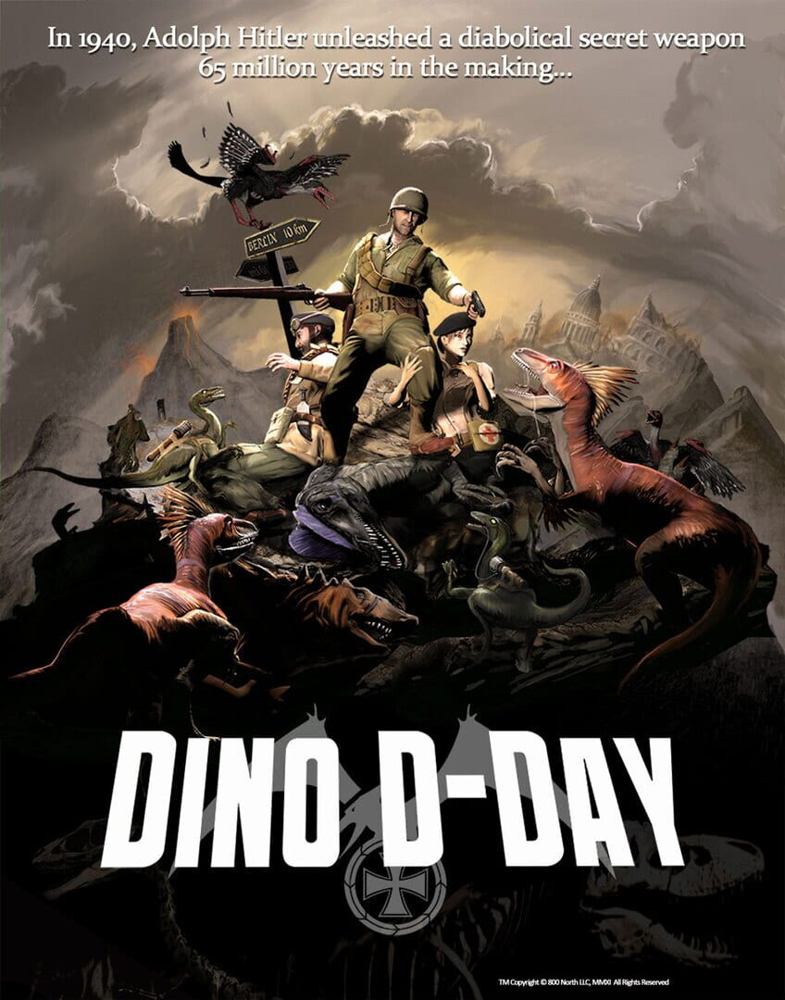

Dino D-Day
Dino D-Day
Details
|  | |
| Playtime | Not Played |
| Last Activity | Never |
| Added | 02/12/2022 9:35:48 |
| Modified | 18/05/2025 1:38:40 |
| Completion Status | Not Played |
| Library | Steam |
| Source | Steam |
| Platform | PC (Windows) |
| Release Date | 08/04/2011 |
| Community Score | 53 |
| Critic Score | 53 |
| User Score | |
| Genre | Indie Shooter |
| Developer | 800 North and Digital Ranch |
| Publisher | 800 North and Digital Ranch |
| Feature | Massively Multiplayer Online (MMO) Multiplayer |
| Links | Wikipedia Steam Official Website |
| Tag | Action Alternate History Comedy Co-op Dinosaurs First-Person FPS Funny Gore Historical Indie Multiplayer Open World PvP Shooter Survival Third Person Third-Person Shooter War World War II |
Description
The year is 1942. Adolf Hitler has succeeded in resurrecting dinosaurs. The reptilian horde has trampled Europe and the Mediterranean. Can nothing stop the Nazi’s dinosaur army?
Dino D-Day is a frantic, action-packed multiplayer game that transports you to a World War II that should have been. You and your friends can battle online choosing to serve the cause of the Allied nations or the Nazis. The Allied side includes seven playable characters including Trigger, a Protoceratops rescued from the Nazis. Each Allied class has unique weapons and abilities to use in combat. Gun down a Dilophosaur with your trusty M1 Garand, blast a kamikaze pterosaur out of the sky with your Thompson sub-machine gun, or toss out a dead jackrabbit to lure a raptor into a trap.
As an Axis player you will have your choice of three human classes and four dinosaur classes. Ambush your enemy with speed and stealth as the Raptor, mercilessly pound the enemy with a heavy 20mm gun as the Desmatosuchus, rampage through enemy groups as the Dilophosaur or pick up a body and throw it at an enemy for a double kill! Or if you prefer a rifle in your hand, the German soldier classes are the perfect complement to their dinosaur comrades.
You’ve played World War II games before…but have you played a World War II game with dinosaurs?
Dino D-Day is a frantic, action-packed multiplayer game that transports you to a World War II that should have been. You and your friends can battle online choosing to serve the cause of the Allied nations or the Nazis. The Allied side includes seven playable characters including Trigger, a Protoceratops rescued from the Nazis. Each Allied class has unique weapons and abilities to use in combat. Gun down a Dilophosaur with your trusty M1 Garand, blast a kamikaze pterosaur out of the sky with your Thompson sub-machine gun, or toss out a dead jackrabbit to lure a raptor into a trap.
As an Axis player you will have your choice of three human classes and four dinosaur classes. Ambush your enemy with speed and stealth as the Raptor, mercilessly pound the enemy with a heavy 20mm gun as the Desmatosuchus, rampage through enemy groups as the Dilophosaur or pick up a body and throw it at an enemy for a double kill! Or if you prefer a rifle in your hand, the German soldier classes are the perfect complement to their dinosaur comrades.
You’ve played World War II games before…but have you played a World War II game with dinosaurs?
Key features:
- Frantic online multiplayer action involving Nazis and Dinosaurs
- 7 playable dinosaur classes: Velociraptor, Dilophosaur, Desmatosuchus, Stygimoloch, Trigger the Protoceratops, Tyrannosaurus Rex, Styracosaur.
- 9 playable human classes
- 26 classic World War II weapons and plenty of exciting dinosaur attacks!
- Powered by Valve’s Software’s Source engine – the technology behind such mega-hits as Half-Life 2, Team Fortress 2, Portal, Portal2, Left 4 Dead, and Left 4 Dead 2!